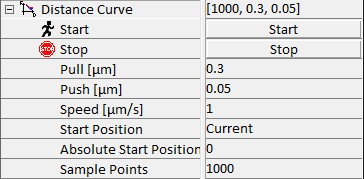

|
距离曲线
|
距离曲线用于研究在定义的样品位置处，当探针通过使用扫描台的 Z 扫描逼近并回缩样品时发生的现象。探针例如可以是 AFM 和 SNOM 测量中的悬臂梁探针，其中研究探针-样品相互作用。在这些实验中，悬臂梁探针逼近并回缩样品。作为距离函数记录的信号包括：
通常，当探针已经与样品接触且其位置由反馈回路控制时记录距离曲线。除了研究探针-样品相互作用外，探针也可以是光源，在这种情况下光强度作为样品距离的函数被记录。测量力-距离曲线所需的参数如下所列。
更多信息（操作指南）：

开始
此参数启动距离曲线。
采样点数
此参数定义距离曲线中记录的点数。
抬起 [µm]
此参数定义在记录距离曲线之前和之后探针从样品抬起的距离。
推入 [µm]
此参数定义探针向下移动到样品中的距离。向下运动的参考点是起始位置（见下文）。
速度 [µm/s]
此参数定义在整个距离曲线过程中扫描台 Z 方向的运动速度。
起始位置
此参数定义上述抬起和推入参数的内部坐标系参考点。此参数可以设置为当前或绝对。如果选择绝对，则使用绝对起始位置参数（见下文）作为起始位置。
绝对起始位置 [µm]
此参数定义扫描台 Z 轴绝对位置方面的起始位置。